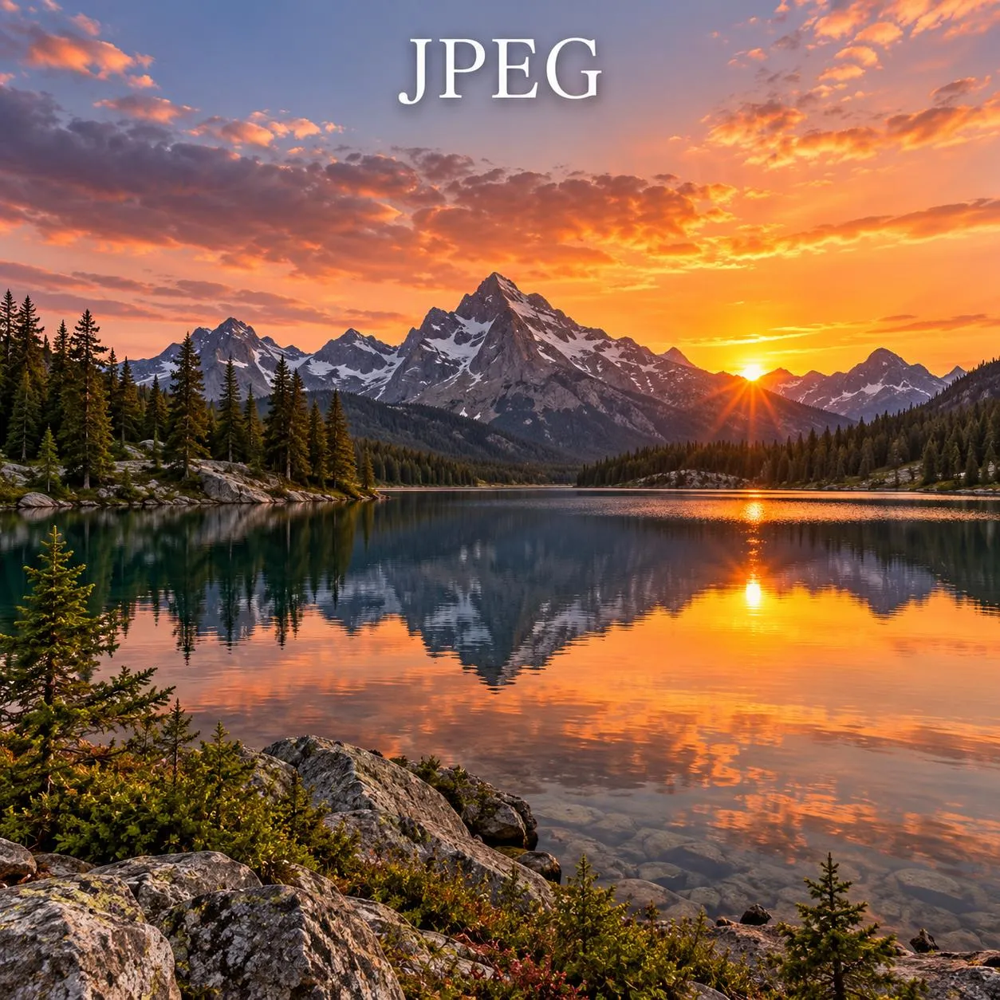
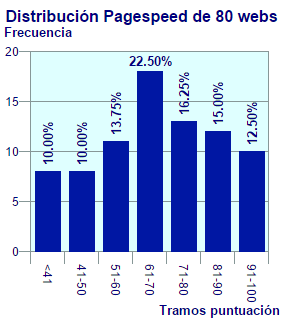

1. ¿Cuál es la diferencia principal entre los formatos de imagen rasterizados y los vectoriales? (Ejemplo: JPEG y PNG vs. SVG)
Imágenes rasterizadas (JPEG, PNG): Están formadas por píxeles (pequeños puntos de color). Al ampliarlas demasiado, pierden calidad y se ven pixeladas.
Imágenes vectoriales (SVG): Están formadas por figuras geométricas definidas matemáticamente, como líneas y curvas. Se pueden ampliar o reducir sin perder calidad.
2. ¿Por qué el formato JPEG es el más utilizado para fotografías digitales, y cuáles son las consecuencias de su compresión con pérdida?
El formato JPEG es muy utilizado para fotografías porque permite reducir bastante el tamaño de los archivos manteniendo una calidad visual aceptable.
Esto facilita su almacenamiento y su envío por Internet.
La principal consecuencia de su compresión con pérdida es que elimina parte de la información de la imagen para reducir su tamaño.
Se pierde calidad, especialmente si se comprime demasiado.
Pueden aparecer zonas borrosas o defectos visuales.
Si se edita y guarda repetidamente, puede perder todavía más calidad.
3. Explica en qué situaciones sería más conveniente usar una imagen PNG en lugar de una JPEG.
Es más conveniente utilizar PNG cuando necesitamos mantener una buena calidad de imagen o utilizar transparencias.
Cuando la imagen tiene un fondo transparente.
Para capturas de pantalla que contienen texto.
Para imágenes con líneas, iconos o colores planos.
Cuando queremos evitar pérdidas de calidad al guardar la imagen.
4. El formato GIF tiene limitaciones en su paleta de colores. ¿Cómo afecta esto a la calidad visual de las imágenes y qué ventajas mantiene frente a otros formatos?
El formato GIF solamente puede utilizar hasta 256 colores por imagen, por lo que las fotografías pueden perder calidad y mostrar colores poco naturales.
A pesar de esto, tiene algunas ventajas:
Permite crear animaciones sencillas.
Es compatible con prácticamente todos los navegadores.
Puede tener archivos pequeños cuando las imágenes son simples.
Permite transparencia básica.
5. ¿Qué características hacen del formato SVG una buena opción para logotipos y gráficos escalables en la web?
El formato SVG es una buena opción porque utiliza gráficos vectoriales, por lo que se puede cambiar su tamaño sin perder calidad.
No se pixela al ampliar la imagen.
Suele ocupar poco espacio en gráficos sencillos.
Se puede modificar mediante código HTML, CSS y JavaScript.
Es ideal para logotipos, iconos y dibujos sencillos.
6. Compara el formato WEBP con PNG y JPEG. ¿Qué ventajas ofrece en términos de compresión, transparencia y animación?
El formato WebP es un formato de imagen moderno diseñado para reducir el tamaño de los archivos sin perder demasiada calidad.
Frente a JPEG: Puede conseguir archivos más pequeños con una calidad visual similar.
Frente a PNG: Puede ofrecer archivos más pequeños y también permite transparencias.
Compresión: Permite compresión con pérdida y sin pérdida.
Animación: Permite crear imágenes animadas, como los GIF.
Por estas razones, WebP es una buena opción para utilizar imágenes en páginas web.
7. ¿Por qué el formato BMP no se utiliza comúnmente en entornos web, y en qué casos aún puede ser útil?
El formato BMP no se utiliza mucho en páginas web porque normalmente genera archivos bastante grandes, ya que suele guardar las imágenes sin comprimir.
Esto hace que las páginas web tarden más en cargar.
Aun así, puede ser útil en algunas situaciones:
En programas antiguos que utilizan este formato.
Cuando se necesita trabajar con imágenes sin compresión.
En determinadas aplicaciones de Windows.
8. Explica las ventajas del formato PSD en el proceso de edición de imágenes profesionales. ¿Qué lo diferencia de los demás formatos?
El formato PSD es el formato de trabajo de Adobe Photoshop y se utiliza principalmente para editar imágenes y diseños.
Su principal ventaja es que permite guardar los elementos de un proyecto por separado.
Permite trabajar con varias capas.
Guarda textos, efectos y máscaras editables.
Permite modificar partes del diseño sin tener que empezar de nuevo.
Mantiene la información necesaria para continuar editando el proyecto.
A diferencia de JPEG, PNG o WebP, PSD está pensado principalmente para editar imágenes, no para mostrarlas directamente en una página web.
9. Si un diseñador necesita una imagen con transparencia, buena calidad y tamaño de archivo razonable para una página web moderna, ¿qué formato debería elegir y por qué?
La mejor opción en general sería utilizar WebP, ya que permite tener imágenes con transparencia, buena calidad y un tamaño de archivo reducido.
Permite utilizar fondos transparentes.
Ofrece buena calidad de imagen.
Normalmente ocupa menos espacio que PNG.
Es compatible con los navegadores web modernos.
También se podría utilizar PNG si fuera importante conservar exactamente todos los detalles de la imagen, aunque normalmente ocuparía más espacio.
10. Describe las diferencias entre la compresión con pérdida y sin pérdida, indicando qué formatos utilizan cada tipo y en qué casos es preferible uno sobre el otro.
La compresión con pérdida reduce el tamaño de una imagen eliminando parte de su información. Esto hace que ocupe menos espacio, pero puede disminuir su calidad.
Formatos: JPEG y WebP con pérdida.
Es recomendable para fotografías e imágenes donde sea más importante reducir el tamaño del archivo.
La compresión sin pérdida reduce el tamaño del archivo sin eliminar información de la imagen, por lo que mantiene su calidad original.
Formatos: PNG, GIF y WebP sin pérdida.
Es recomendable para capturas de pantalla, gráficos, iconos e imágenes que necesitan conservar sus detalles.
En resumen, la compresión con pérdida es mejor cuando buscamos archivos pequeños, mientras que la compresión sin pérdida es preferible cuando necesitamos conservar la calidad original.
Ejercicio 1 Imagenes y formatos
PNG
Original:
Ancho 30%
Altura 50%
JPEG
Original:
Ancho 30%
Altura 50%
SVG
Original:
Ancho 30%
Altura 50%
Imagenes a WEBP

Imagenes a AVIF
Imagen con <picture>
Ejercicio 3 Semántica y Accesibilidad WCAG 2.2

Figura 1. Distribución de las puntuaciones PageSpeed de 80 páginas web.